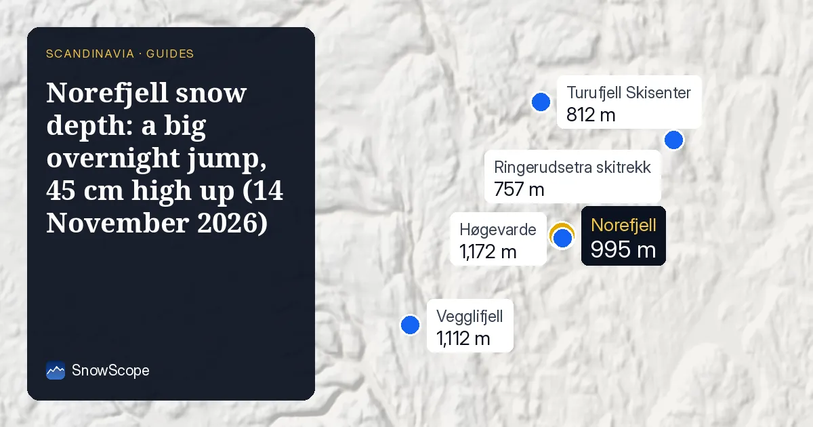
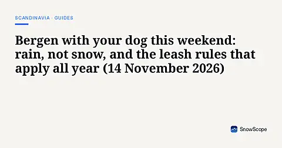

Norefjell snow depth: a big overnight jump, 45 cm high up (14 November 2026)
Norefjell, the closest big mountain to Oslo, woke up white. On Norway's national snow map the depth on the hillside went from about 4 to 5 cm to 15 to 20 cm in one night, everywhere between 133 m by Lake Krøderen and 978 m on the upper slopes. On the plateau above, at 1288 m, the map estimates about 45 cm. These are estimates from the national map. The weather station at Gulsvik, 18 km away at 142 m in the valley, measured 13 cm the same morning, so even the valley floor is white.
See the live snow forecast for Norefjell in the SnowScope appSnow depth, powder alerts and the 3D map, free.

One night changed the picture
Our own estimate for the last seven days is about 14 cm of new snow at the top and at mid-mountain, and 8 cm at the base. Most of it came in the last day, which matches the jump on the national map.
This is fresh, light snow on ground that was bare a few days ago. It looks great, but it is not a base yet: on the ungroomed slopes there are stones and heather just below.

Will it stay?
For the next seven days we have about 9 cm at the top (995 m), 8 cm at 594 m and almost nothing at the bottom. Other forecasts range from 13 to 53 cm at the top, so the high end is much wetter than our number.
At the bottom the problem is warmth: in the forecasts we compare with, about two thirds of the water falls as rain at 194 m, and the snow line hangs around 300 to 330 m. The lowest slopes may lose much of today's snow; from mid-mountain up it should hold.
What normal looks like
Our 46 past winters put the usual depth on 14 November at 26 cm at the top, 16 cm at mid-mountain and 3 cm at the base. So the upper mountain is roughly at normal today, the bottom is above it. By 30 November the top usually has 56 cm, by 15 December 64 cm.
Norefjell's bottom is low and its top is high, and the history shows it: the base sees about 172 days with snow in a middle winter, the top about 212. The top is the one that keeps winter longest.
Is Norefjell open?
Not yet. On 13 November Norefjell's own opening-hours page still said the ski centre is closed for the season, and it gave no opening date for this winter. Its slope page shows which lifts run once that changes.
Tips for skiers
- Fresh snow on bare ground hides rocks. Stay on prepared slopes until the base has built up.
- Rain on new snow at the bottom makes the road up to the ski area slushy and then icy at night.
- The plateau above the lifts is open mountain: wind, low cloud and early dark in November. Go prepared or stay lower.
More maps (external sites)
References and credits
- seNorge, Norway's national snow map (NVE and MET Norway), open data under the NLOD licence www.senorge.no/
- Norefjell, official site: opening dates and lift status, read 2026-11-13 www.norefjell.com/apningstider
- Varsom, avalanche warnings for Norway www.varsom.no/
- MET Norway, station observations (CC BY 4.0), daily reports as published by Ogimet www.ogimet.com/
About these numbers
Measured snow: morning readings of 13 November 2026 at the official weather stations of Sweden (SMHI open data), Finland (FMI open data, CC BY 4.0) and Norway (MET Norway station reports, CC BY 4.0, as published by Ogimet). Norway's national snow map seNorge (NVE and MET Norway, NLOD) gives the estimates on a 1 km grid for the slopes. Opening dates: the resorts' own pages, read on 13 November 2026. Run length and lift count: OpenSkiMap mapping.
Official avalanche bulletins: Varsom (NVE)
Cite this report
For research, teaching or the press: the numbers and charts are free to reuse under CC BY 4.0 with this citation.
SnowScope (2026), Norefjell snow depth: a big overnight jump, 45 cm high up (14 November 2026), https://snowscope.app/blog/en/2026/11/norefjell-snow-depth-14-november-2026.html, accessed 2026-11-14
SnowScope (Atlas Labs). (2026, November 14). Norefjell snow depth: a big overnight jump, 45 cm high up (14 November 2026). SnowScope snow reports. https://snowscope.app/blog/en/2026/11/norefjell-snow-depth-14-november-2026.html
BibTeX
@misc{snowscope2026norefjellsnowdepth14nove,
author = {{SnowScope (Atlas Labs)}},
title = {Norefjell snow depth: a big overnight jump, 45 cm high up (14 November 2026)},
year = {2026},
month = nov,
howpublished = {\url{https://snowscope.app/blog/en/2026/11/norefjell-snow-depth-14-november-2026.html}},
note = {Published 2026-11-14 20:11 UTC; accessed 2026-11-14}
}· CC BY 4.0 · Methods, data and tools →
Norefjell: snow and temperature by height, this winter vs last (tools) →
Follow Norefjell
Free: a message when fresh snow is coming, and the forecast every morning.
More snow reports

Bergen dog owners, weekend of 14 November 2026: bare ground at Florida on Friday, 5 cm only up at Kvamskogen, and a very wet Sunday. Bergen's year-round leash rules, the four fenced dog yards, and the Fløyen trails.

Measured snow depth across Sweden on 13 November 2026: 133 of 322 stations white, a belt from Dalarna to Västerbotten with up to 45 cm, a bare south and an almost bare far north around Kiruna.

Measured snow depth in Norway on 13 November 2026: 37 cm at Tryvannshøgda above Oslo, 44 cm at Lyngen in Troms, 10 to 18 cm in the inland valleys, bare ground in Bergen, Trondheim and inland Finnmark.